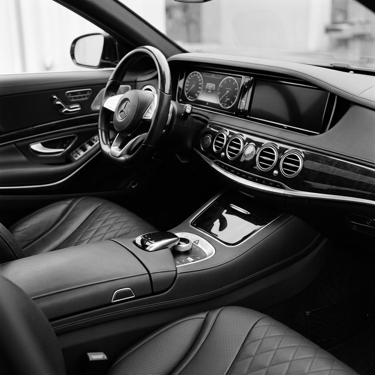

Premium Alman sedanları her zaman iki zıt kavramı ustalıkla birleştirmeleriyle bilinir: Konfor ve vahşi güç. Hafta içi iş toplantılarına giderken size son derece yumuşak, izole ve sessiz bir alan sağlayan bu otomobiller, hafta sonu otobanda veya virajlı yollarda içlerindeki canavarı serbest bırakmaya her an hazırlıklıdır.
Uzun dingil mesafesi, heybetli devasa kaput yapısı ve yere sağlam basan geniş iz açıklığı, güçlü sedanların dışarıdan bakıldığındaki imza niteliğindeki tasarımlarıdır. Özellikle gümüş veya siyah rengin getirdiği asalet, devasa hava girişleri ve karartılmış 20 inçlik jantlarla tezat yaratarak müthiş bir 'Sleeper' (uyuyan canavar) hissi yaratır. Trafikte ilk bakışta sadece saygı uyandıran lüks bir otomobil gibi görünse de, o kaputun altında yatan 600 beygiri aşkın gücü sadece bilenler fark eder.

Lüksün İçindeki Vahşet
İç mekanda birinci sınıf Nappa deri döşemeler, geniş ekranlar, gerçek ahşap veya karbon fiber trimler ve modern masaj fonksiyonlu koltuklarla çevrili olsanız da, sağ ayağınızın altında devasa çift turbolu bir V8 motorun yattığını her zaman bilirsiniz. Yüksek hızlarda seyrettiğiniz onca saat boyunca kabin içine sızan rüzgar sesi neredeyse sıfıra yakındır, yolcular yorgunluk hissetmeden kıtalar arası seyahat edebilir.
Aktif süspansiyon sistemleri sayesinde, araç saniyeler içinde yumuşacık bir uçan halı modundan, şasisi kaskatı kesilmiş agresif bir pist oyuncağına dönüşebilir. Bu iki karakter arasındaki geçiş öylesine pürüzsüzdür ki, mühendisliğin ulaştığı son noktaya hayran kalırsınız.

Güvenlik ve sürüş destek asistanları konusunda da adeta bir uzay gemisini andırır. Gelişmiş radarlar, gece görüş kameraları ve otonom sürüş özellikleri sürücünün yükünü alarak uzun yolculukları tam bir keyfe dönüştürür. Konfor ve teknoloji öylesine bütünleşmiştir ki, otomobil adeta sürücüsünün bir sonraki adımını tahmin edip ona göre tepki verir.
"Makam aracından yarış otomobiline dönüşmek için sadece tek bir tuşa basmanız ve gaz pedalını ezmeniz yeterli."
Performanslı sedan sınıfı, bir aileyi veya üst düzey bir yöneticiyi güvenle taşırken, aynı zamanda trafik ışıklarında süper spor otomobil sürücülerini terletebilen inanılmaz bir başarıdır ve otomobil kültürünün gizli kalmış kahramanlarıdır. Zarafetin vahşetle bu denli uyumlu olduğu başka bir segment bulmak neredeyse imkansızdır.